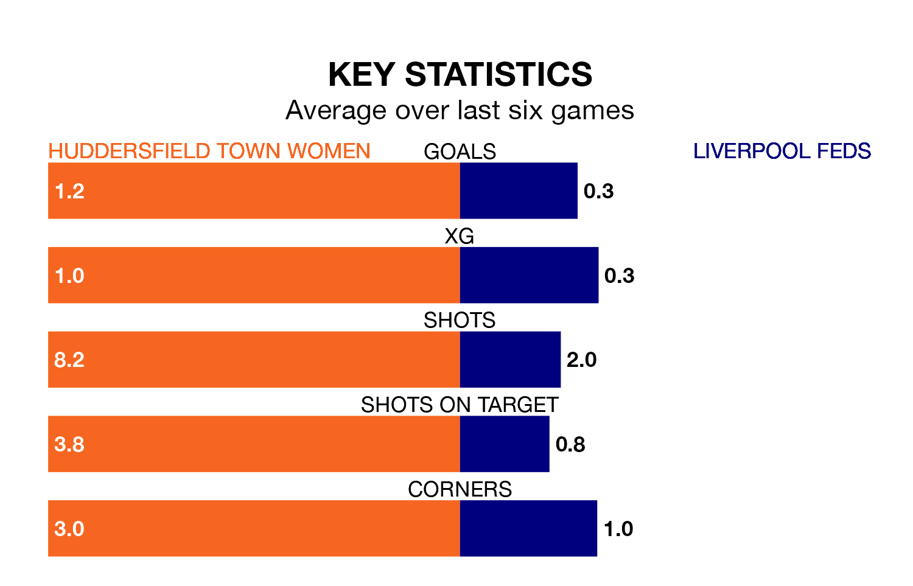

Liverpool Feds travel looking to secure a first win in seven Women's National League Premier Division – North games against Huddersfield Town Women on Sunday.
Liverpool Feds have lost two and drawn four matches since they last earned three points – against Huddersfield Town Women on November 5.
They face a Huddersfield Town side who have won just one and lost five over that time.
Huddersfield Town are 11th in the table after 13 games, of which they have won two and lost 11, earning six points.
Liverpool Feds are four places ahead of the hosts in seventh, with four wins and six draws putting them on 18 points.
With 13 goals in 13 games so far this season, Huddersfield Town are the league's joint-third-lowest scorers with 1.0 goals per game. And they are conceding more than average, letting in 40 goals at a rate of 3.1 per game.
The away side are also below average scorers, with 1.3 goals per game, compared to a league average of 1.7. They have conceded 1.9 goals per game.
In the last five years, Huddersfield Town and Liverpool Feds have played each other on four occasions. Huddersfield Town won three of them and Liverpool Feds one.
On average, Huddersfield Town scored 1.8 goals and Liverpool Feds 1.2 in those matches.
Their last meeting was on November 5, when Liverpool Feds won 3-1 at home.
Huddersfield Town's last match was on March 3, a 2-1 loss against West Brom WFC.
Liverpool Feds lost 3-0 against Wolverhampton Wanderers Women last time out, also on March 3.
Updated: 09:34 (UTC), 08/03/24